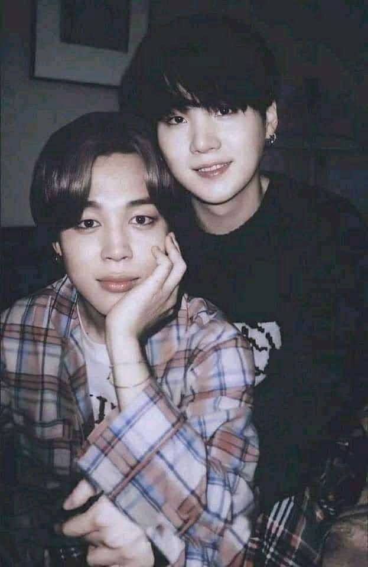

Soy un poema con alma propia, escrito entre códigos, suspiros y sueños. Mi historia no es perfecta, pero es real. Soy una mujer que no se rinde, que abraza su sensibilidad como un superpoder. A veces me rompo, otras veces río con el corazón entero, pero siempre me muestro tal como soy. No siempre escribo con signos perfectos, pero lo que digo viene desde lo más profundo de mi alma. Puedo hablar de amor con la misma intensidad con la que creo un diagrama de flujo. Hago páginas web como cartas llenas de intención, y programo en Java como si cada línea fuera parte de mi historia. Navego entre el lenguaje lógico de la tecnología y el caótico, hermoso idioma del corazón. Anhelo cosas grandes, como cumplir el sueño de estudiar Odontología, y lucho cada día contra mis dudas, mis miedos, y esas voces que a veces quieren hacerme creer que no puedo. Pero sí puedo. Y lo estoy logrando. He amado, he caído, he vuelto a intentarlo. Estoy en el proceso de reconstruirme, de volver a mí, de encontrarme de nuevo. A veces me digo “mi amor” como un recordatorio de que merezco ternura, incluso de mí misma. Soy una mezcla de lógica y emoción, de dulzura y decisión, de heridas que se convirtieron en versos, y de esperanza que se niega a apagarse. Este blog es una parte de mí. Aquí estoy. Aquí escribo. Aquí creo. Aquí me abrazo.